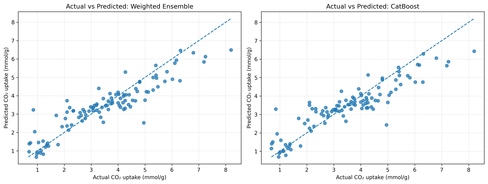
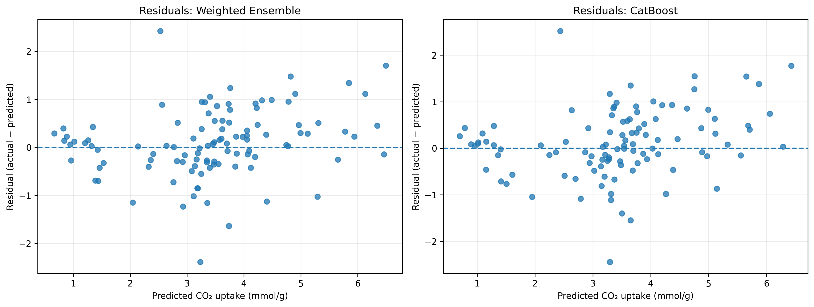
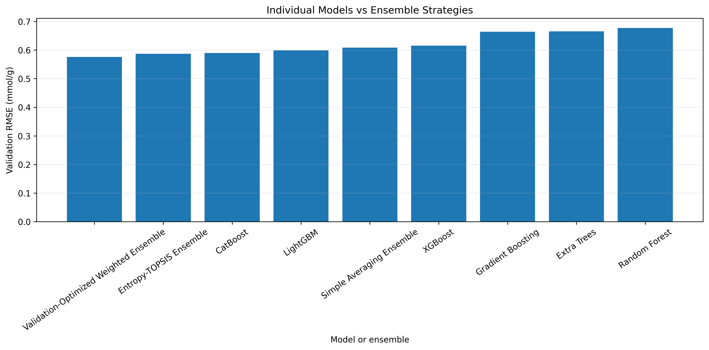

BENCHMARKING & METRICS
Model Comparison Dashboard
Compare the evaluation results across all 6 tuned machine learning algorithms against the validation-optimized ensemble on the untouched test split.
Test Set Performance (Actual Results)
Held-Out Test Set
Evaluation metrics loaded directly from results/final_test_results.csv:
| Model Architecture | MAE (mmol/g) | RMSE (mmol/g) | R² Score |
|---|---|---|---|
| Loading evaluation metrics... | |||
* The Validation-Optimized Weighted Ensemble achieves the highest test coefficient of determination (R² = 0.8173) and the lowest root mean squared error (RMSE = 0.7064 mmol/g).
Ensemble Contribution Weights
Soft VotingWeights selected via constrained optimization on the validation fold:
| Model Name | Ensemble Weight | Relative Share |
|---|---|---|
| Loading weights... | ||
R² Accuracy Comparison
Empirical Diagnostic Visualizations
Actual vs. Predicted Uptake
Ensemble predictions on the test set closely aligned with the 1:1 parity line.

Residual Distribution
Prediction errors centered symmetrically around zero with no heteroscedastic bias.

Ensemble RMSE Benchmark
Comparison of single models vs. different ensembling strategies.
